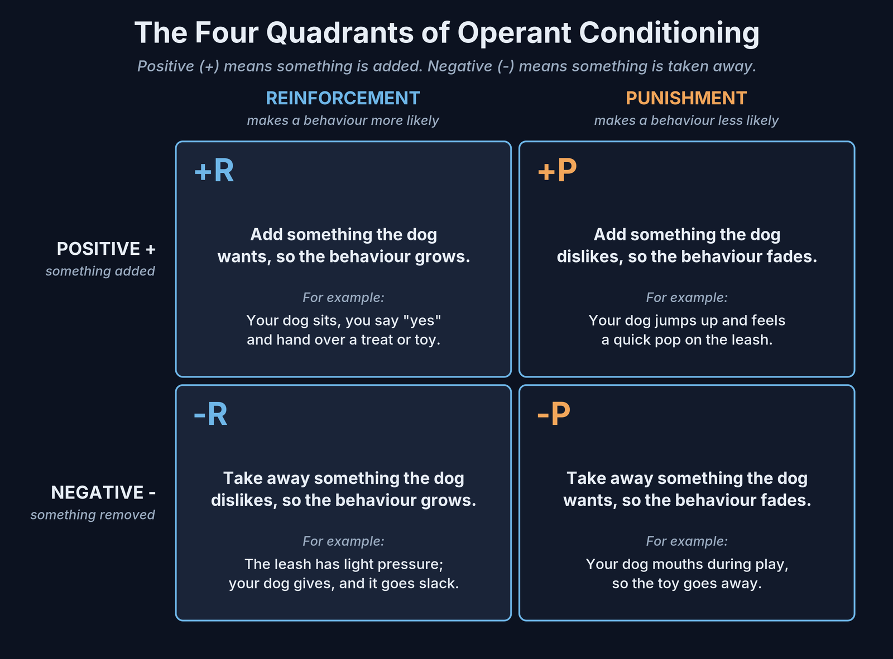

Dog training has a lot of big words. Operant conditioning, negative reinforcement, positive punishment. They sound complicated, and some of them sound a little scary. The ideas behind them are simple, though, and you already use most of them every day without knowing it. This article walks through them in plain English, with examples from real life with a dog.
Two ways dogs learn
Nearly everything a dog learns comes from one of two kinds of learning. The first is about what predicts what. The second is about what happens after the dog does something. Scientists gave them long names, but we will explain each one as we go.
Classical conditioning: Pavlov's dogs and the drool
Classical conditioning means the dog learns that one thing predicts another. That is all it is.
The famous example comes from a Russian scientist named Ivan Pavlov, over a hundred years ago. He was studying digestion in dogs, and he noticed something odd. His dogs started to drool before the food even showed up. They had learned the signs that dinner was coming.
So he tried a test. Just before feeding, a bell was rung. Bell, then food. Bell, then food. After enough repeats, the dogs drooled at the sound of the bell alone, with no food in sight. The bell had come to mean "food is coming".
Notice that the dogs did not do anything to earn the food. They did not sit or come or stay. They simply learned that one thing comes before another, and their bodies reacted.
You see this at home all the time. Your dog goes wild when you pick up the leash, because the leash predicts a walk. Your dog vanishes when the nail clippers come out, because the clippers predict something it does not enjoy. The treat bag rustles and your dog appears from the other end of the house.
How we use it in our training
We use classical conditioning on purpose. When we charge the marker word "yes", we say "yes" and then hand over a treat, over and over, before we ask the dog for anything. Soon "yes" means "something good is coming". It also ends the position, so the dog may get up for its reward. Say "yes" first, then move your hand to the food, so the dog listens to the word, not your hand. It works just like Pavlov's bell. Once that is in place, "yes" becomes a clear way to tell the dog exactly which moment earned the reward.
We do the same thing with the e-collar. At first, we pair a very low level, a touch most people can barely feel, with praise, food and play. The dog learns that the touch predicts good things. That way the e-collar becomes a quiet way to talk to the dog, not something it fears. Our free guide walks through those first steps.
Operant conditioning: actions bring results
Operant conditioning means the dog learns that its own actions bring results. Here the dog does something, and what happens next decides whether it does it again.
A dog that sits and gets a treat will sit more. A dog that jumps on you and gets ignored will jump less. A dog that pulls on the leash and gets dragged to the fire hydrant will pull more, because pulling worked.
The difference is simple. In classical conditioning, the dog learns "this predicts that". In operant conditioning, the dog learns "when I do this, that happens".
The two words that confuse everyone
Operant conditioning is split into four parts, often called the four quadrants. Before we look at them, we need to clear up two words.
In dog training, positive does not mean good, and negative does not mean bad. Think of them as math signs.
- Positive (+) means we add something.
- Negative (-) means we take something away.
Two more words finish the picture.
- Reinforcement means the behaviour becomes more likely to happen again.
- Punishment means the behaviour becomes less likely to happen again. In training, it does not mean anger or pain. It just means "less of that".
Put those together and you get four boxes.

Positive reinforcement (+R): add something good
We add something the dog wants, so the behaviour grows. Your dog sits, you say "yes" and hand over a treat or a toy. Next time, your dog sits a little faster.
This is where most of our teaching happens. Every new behaviour starts here: we guide the dog with food, mark the right moment with "yes" and reward it. Later the food becomes less frequent and toys and praise take over. A dog that is having fun learns quickly and wants to keep working.
Negative reinforcement (-R): take away something unpleasant
We take away something the dog does not like, so the behaviour grows. The best example is leash pressure.
We put light, steady pressure on the leash. The moment the dog gives toward us, we release it. The leash goes slack. The dog learns that moving with us turns the pressure off. We teach this on its own, slowly, and pair the release with "yes" and a reward at first so the dog really understands it. It is a gentle conversation, not a tug of war.
The lowest working level on the e-collar works the same way. Once a dog understands a cue, a light touch can stay on until the dog responds, then switches off the instant it does. The dog always knows how to make it stop.
Positive punishment (+P): add something unpleasant
We add something the dog does not like, so the behaviour fades. A well-timed leash pop, or an e-collar correction, for ignoring a cue the dog already knows well.
This is the quadrant people worry about most, and it is the one that gets misused most. Our rules are simple. Corrections come last, only for behaviours the dog truly knows, and always after the "no" marker so the dog gets a fair warning. They are matched to the dog in front of us, never harder than needed, and never with the e-collar on puppies. A dog should never be corrected for something it was never taught.
Negative punishment (-P): take away something good
We take away something the dog wants, so the behaviour fades. Your dog grabs your sleeve during a game of tug, so the game stops and the toy goes away. Your dog jumps up for attention, so you turn your back. When jumping stops working, jumping fades. A growl that used to keep a dog on the couch no longer works because you calmly guide it off on the leash. The payoff is gone, so the bluff fades.
This one is quiet and often forgotten, but it is one of the cleanest tools there is.
Why we use all four
Some trainers use only one or two of these boxes. We use all four, fairly, because each one gives the dog a different and useful piece of information.
- Positive reinforcement tells the dog what we want, and makes training fun.
- Negative reinforcement teaches the dog how to respond to the leash and the e-collar, so it always knows how to win.
- Negative punishment shows the dog that rude behaviour does not pay.
- Positive punishment, used rarely and fairly, tells a dog that already knows the rule that ignoring it is not an option.
Leaving one out does not make training kinder. It just leaves the dog with less clear information. A dog that knows what earns a reward and what does not is a calm, confident dog. The goal is always the same: a clear, fair, happy dog that you can trust in real life.
Where to go from here
To go deeper on using what your dog wants as the reward, read The Premack Principle: Using What Your Dog Wants as the Reward.
Want to see what happens when a squirrel is worth more than your treat? Read When the Squirrel Wins: Competing Reinforcers in Plain English.
If you want to see these ideas put to work with the e-collar, start with our free guide, E-Collar Introduction (free PDF). It covers charging your marker and pairing the low level with good things, step by step.
To work on this with us in person, have a look at our training courses, from Puppy Foundations to Basic Obedience and beyond. We offer free walk-in consultations, so come by and meet us with your dog.